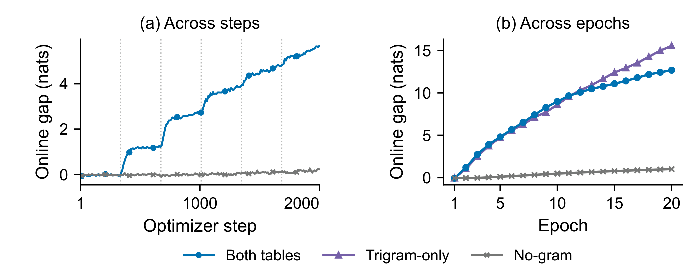
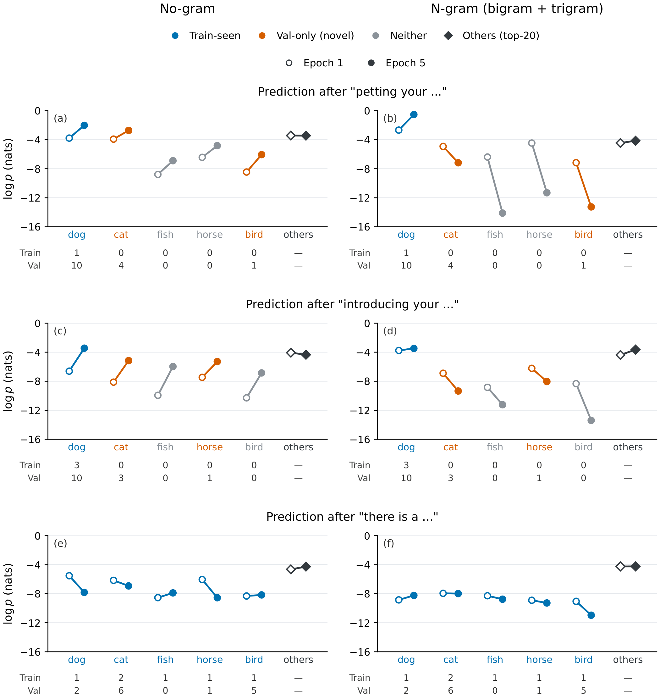
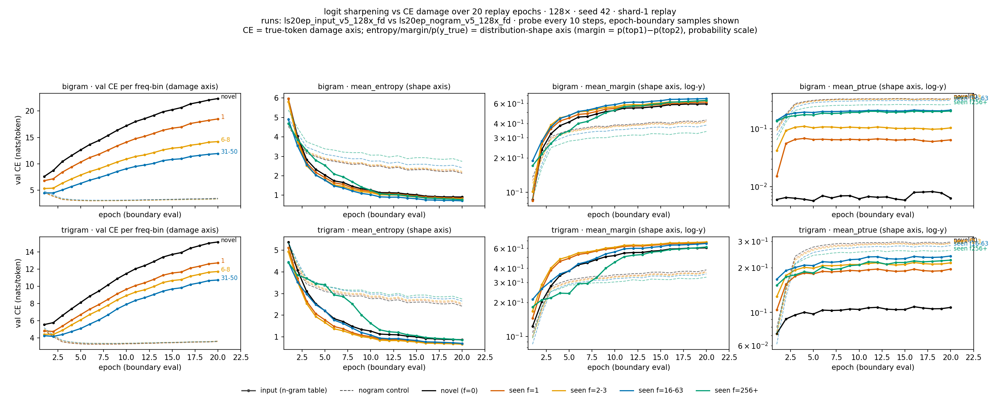
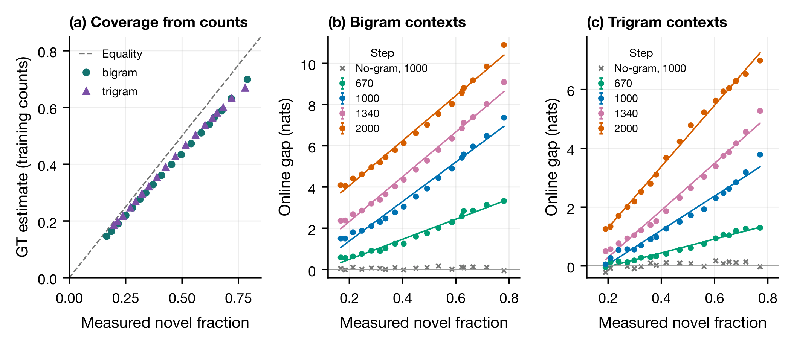

Forking
Sudden Overfitting Under Replay
In language models with local n-gram memory, replay can drive training loss down while held-out loss rises. We study when this split appears, which predictions are hurt, and how it relates to continuation coverage.

What we find
- The divergence follows replay. Separation grows as training revisits the finite corpus.
- A seen context can have an unseen continuation. Improved fitting of observed continuations can coexist with worse predictions for plausible alternatives.
- Continuation coverage organizes the gap. Three-seed frequency-bin measurements support an approximate relationship between novelty and the online gap.
These findings motivate evaluating memory-augmented models across repeated passes, beyond their initial improvement in fitting.
1. The timing follows repeated exposure
Short-run traces show structure aligned with replay boundaries; longer runs follow the gap across 20 passes.

2. Inspect the next-token predictions
These context probes show how probability changes between the first and fifth pass, comparing the no-gram and local-memory models.

The input is BOS plus exactly three context tokens. “Others” is a separately reranked top-20 mean probability. See measurement details and the aggregate continuation diagnostic.
Sharpening and recovery
The mechanism schematic labels the replay effect Sharpening and the contrasting recovery path Only no-gram can do. Its bar heights are illustrative. The measured companion below separates output shape from true-token damage.



3. Relate the gap to continuation coverage
The fraction of continuations not observed in training provides a useful description of the gap across context-frequency bins.

Additional paper figures cover frequency, table capacity, corpus size, and retrieval masking and freezing. Their sources and scope are recorded individually.
Reproduce the analysis
Clone the release branch, then run two standard-library checks:
git clone --branch release --single-branch https://github.com/guoshaoyang-pku/forking.git
cd forking
python3 reproduce/verify_coverage.py
python3 reproduce/verify_contexts.pyPython 3.10 or newer. No packages, GPU, or model download are needed for these checks. They recompute eight coverage fits and check 72 context endpoints from the bundled observations.
Analysis and replotting · Baseline and no-gram training · Code map
The same fixed context-to-row rule is used in training and validation. The results concern learned behavior under replay; they do not establish independent context subspaces or equivalence to every sparse architecture.
Full training requires external tokenized data and the frequency index. Final manuscript/citation, tokenizer acquisition details, and the license remain to be attached. See material availability.